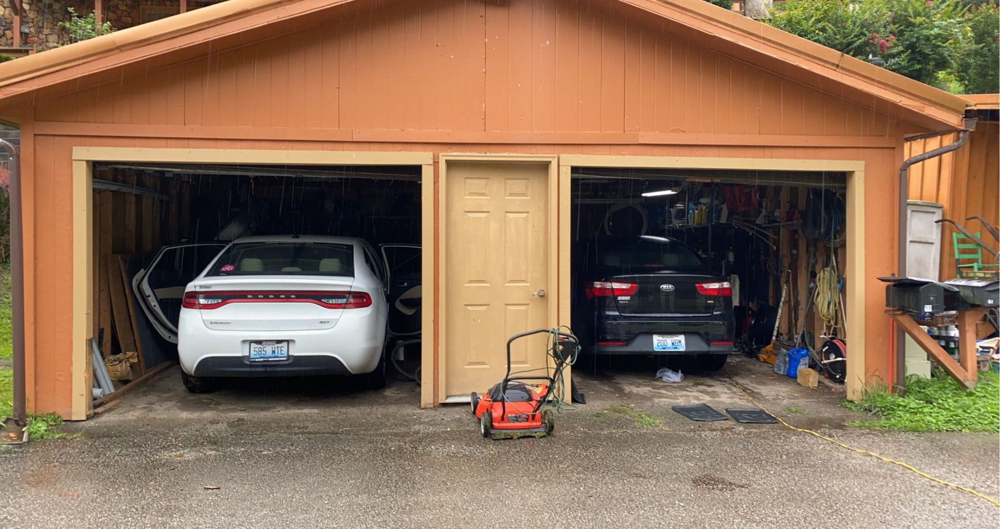
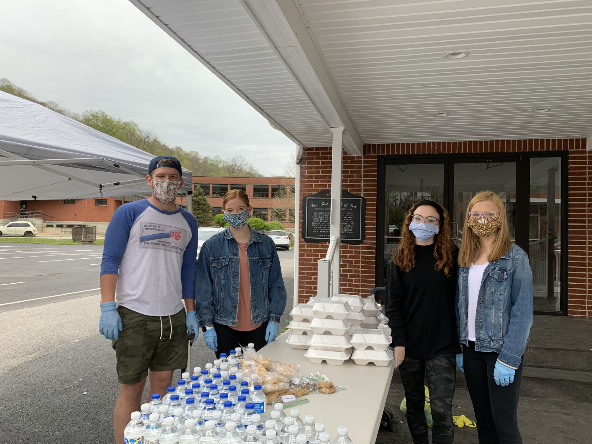
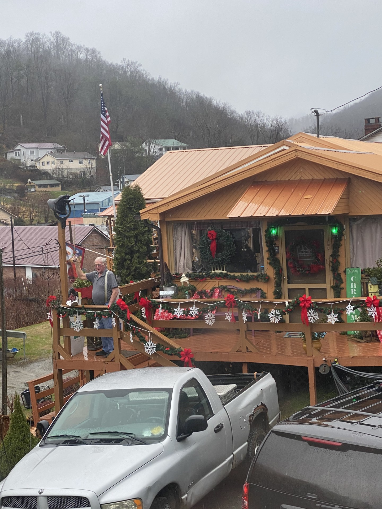
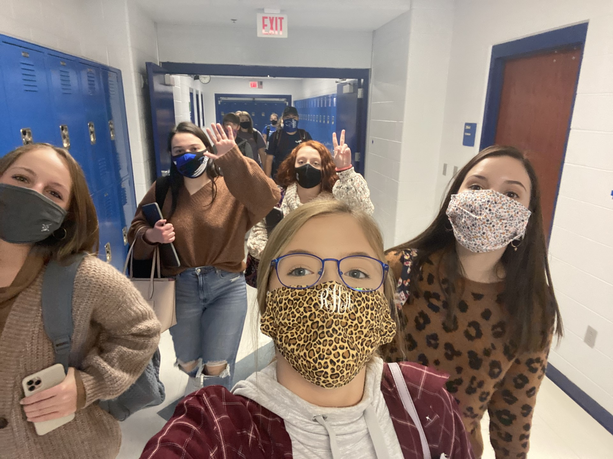

The Days in the Life of a High School Junior during a Global Pandemic
Where were when lockdown began?
COVID-19 was first announced and came in one ear and out the other faster than lightning to my freshly 16-year-old self. My dad worked in our local hospital and told us to be cautious and monitor our symptoms, but this virus would pass in no time. I had no doubts that this would be like an average cold, and that my strong immune system would be just fine. However, in March of 2020, my life as I knew it, all changed. I was 3 hours from home, in Lexington, Kentucky. It was my sophomore year of high school and I had just walked off the floor of Rupp Arena. My high school’s girls’ basketball team had just lost in the Sweet Sixteen and I had stood on the sidelines as I watched my twin sister and best friends fulfill their dreams on that flood. As my dream of cheering on Rupp’s floor came to a closing, we sat down in our bus seats and got the call and announcement that the rest of the biggest and most honored tournament in Kentucky High School basketball has been cancelled due to COVID-19. Less than 10 minutes later, school was cancelled for the next week. Normally, a call of school being cancelled would be something I forgot within the hour, however, episodic memory, a memory remembered vividly due to the high emotions that took place during the creation of the memory, took over my body and will be something I will never forget. High school, cheerleading, and even my family, was never the same after that call.
What about Milestones?

I was freshly 16 and wanted to get the wheels rolling! During COVID-19 lockdown, my parents were very strict on when and where my sisters and I could go places. My twin sister, Bailey, and I had just gotten our permits 2 months prior and had cars sitting in the garage that could only be driven to shut down businesses and volunteer events. Because of the positive testing rate, and the majority number of people in my church being elders, even my church was closed and only had zoom services.
The Appalachian Love will also hold strong

However, Appalachian people will always help their own, so my church got together, fully masked and socially distanced, and gave out whatever we could at least twice a week. My sisters and cousin Logan always showed up. We gave out hot dinners, cold dinners, food boxes, clothing boxes, anything and everything that was donated, headed straight back out the door to our community. With the poverty levels only rising, and the number of people sent home due to the virus, our community needed a lot more than what we could give, but we tried.
What a toll COVID has taken
Most COVID memories I have are clear. My dad was very, very strict on handling this virus, so I have very few memories that aren’t like the déjà vu I experienced from never leaving Neon. I chose these photos because I believe they express the seriousness of the virus, yet through the life a young girl who never tested positive but was kept in the captivity of punishment that portrayed her tests as positives. I don’t believe the pandemic affected my memory, as I remember every time something or someone was taken from me because I will never understand why.
The First Escape
In November, Letcher County schools decided to open up the choice of in-person learning. My sister and I both chose yes, and attended school every Monday and Wednesday, while keeping Friday virtual. Everyone in the schools were split to 2 groups – Monday/Wednesday group and Tuesday/Thursday group. I never got to see my friends in the 2nd group, but I made plenty in mine, and I am very thankful for that.

However, to attend school and play sports, even with masks on, we had to go through a drive-through testing tent once a week to make sure we never caught COVID so it wouldn’t spread. Every Monday at 4:00pm, Bailey and I would get the testing swabs painfully shoved up our noses, sign for the results to be sent to LCCHS, and went on about days, hoping to never get the “Positive Call.”
Family, Faith, & Andy Beshear

During 2020, my grandparents, who were also my next-door neighbors, had to keep their distance from us for the very first time, due to their age and underlying illnesses. They hated having to call to talk and hated watching the news even more. Every day it felt like Governor Beshear was putting more and more boundaries on us. However, he suggested that all Kentucky citizens ring their bells in honor of the Kentuckians who has died from the virus, and my Pap did just that. Every morning at 10:00am, I got to walk outside and see my Pap ring his front porch bell with as much pride as any Kentuckian can have. I’ll always love seeing bells like his and be thankful for a flashbulb memory that he created standing on his porch with a smile, and will never know how much it meant to me.